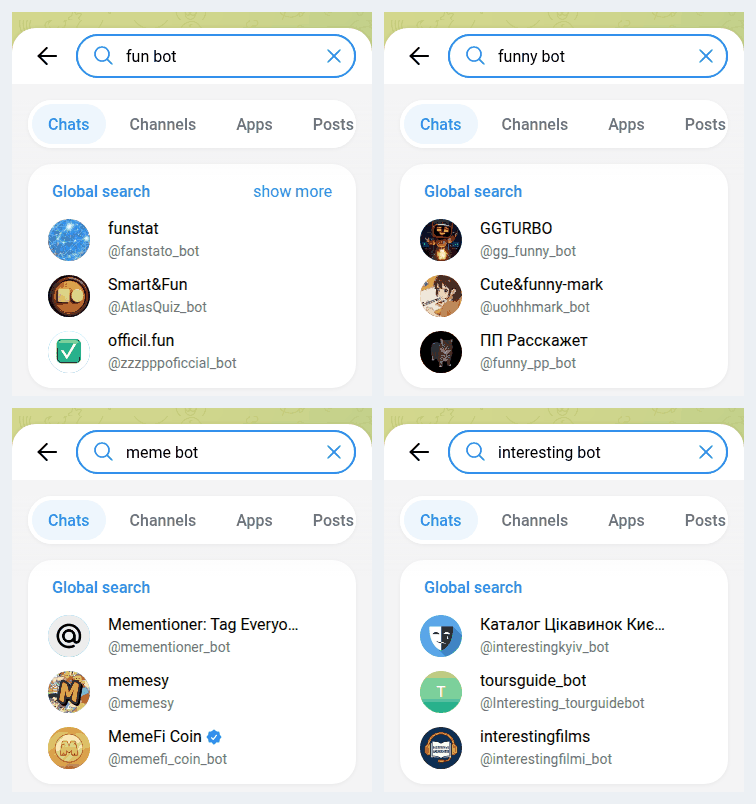

Fun Telegram Bots: I Opened 117, Only 16 Actually Work
Type “fun bot” into Telegram search and the first result is a bot that looks up statistics on Telegram users and groups. Its own description calls it “OSINT”. The second is a poll bot. The third didn’t answer when I wrote to it. Type “meme bot” and you get a memecoin. Type “interesting bot” and you get a guide to Kyiv venues.
So on 13 October 2026 I did this properly. I ran 18 searches for fun Telegram bots, took every bot that came back, added the fun picks from the web lists, and sent each one /start. 117 bots. 16 of them do something fun when you open them. 52 never answered. 17 have a fun name on top of an empty template: an anonymous inbox, a feedback form, a “join our channel first” wall. And 32 aren’t fun bots at all. They just have the word in their name.
Below: the 16 that work, what the rest are, and how to spot a working one before you tap.

How I built the list
I didn’t start from a blog list. The “best Telegram bots” articles I read first were lists of useful bots: file converters, RSS readers, temp mail. Only a handful of entries were there for fun. So I went where a normal person goes. I typed into Telegram’s own search box.
- Searches, fixed before I opened anything: the words Google suggests around “fun Telegram bots” (
fun,fun bot,funny,funny bot,entertainment,interesting bot) and the things fun bots are usually for (meme bot,jokes,prank,roast,horoscope bot,magic 8 ball). - A second pass after the first one went badly, searching by what a bot makes:
joke bot,quote bot,random fact bot,voice changer bot,sticker maker bot,compliment bot. - Five fun picks from the web lists I read, so the blogs got a fair hearing too.
- The test: I sent each bot
/start, the first thing anyone sends, waited, and saved what came back: the text, the buttons and what type of button each one was. I didn’t press anything, join any channel, share a contact or pay. Then I read every reply myself and sorted the bots by what they actually do, not by what they’re called.
The searches went through the same API method the Telegram app uses, contacts.search, from my account on 13 October 2026. Search results depend on the account and region (mine is a Ukrainian number), so yours won’t match exactly. The pattern should.
Why Telegram search is bad at finding fun bots
Telegram’s documentation describes the search method in five words: it “returns users found by username substring”. It matches names. It doesn’t know what a bot does. And a bot’s name is the one thing its owner has to choose: Telegram’s bot rules say a bot’s username “must end in ‘bot’”, so names like @Fun_bot, @funnybot and @joke_bot belong to whoever got there first. All three stayed silent when I wrote to them.
That’s why searching by mood goes so badly. In my first round of 12 searches:
- “fun bot” found 10 bots. Two belong to FunPay, a marketplace for game accounts and items, and one of those has 272,343 monthly users by the number Telegram shows on its profile. “Fun” is just the start of “FunPay”.
- “meme bot” found a memecoin, a Web3 project that calls itself a “meme nation”, a token feedback bot and a bot that tags everyone in a group. Of the ten, one answered with a way to make a meme.
- “interesting bot” found city bots for Kyiv, Cherkasy and Moscow. The Kyiv one now answers with an advert for a business-bot builder.
- “roast” found one bot: the support chat of a coffee company.
- “jokes”, “fun”, “entertainment” and “prank” found no bots at all. In the Telegram app, “jokes” and “entertainment” show channels instead (joke channels with tens of thousands of subscribers), so if you leave out the word “bot”, you may not see a bot.
Across the 12 first-round searches, 23 of the 55 bots weren’t fun bots of any kind. One of them had put what looks like its own bot token, the secret key that controls a bot, in its public description. I’m not naming it.
The second round, searching by what a bot makes (quote bot, voice changer bot, sticker maker bot), went better on purpose: 48 of its 57 bots were at least trying to be fun. It went worse on everything else, as the next section shows.
What happened when I opened them
What came back after /start | Bots | Share |
|---|---|---|
| Does the fun thing, or one tap from it | 16 | 14% |
| Fun name, silent: no reply in ~10 seconds | 52 | 44% |
| Fun name, empty template behind it | 17 | 15% |
| Not a fun bot (the name matched, nothing else) | 32 | 27% |
| Total | 117 |
If you only count the 85 bots that were meant to be fun, 16 work. That’s about one in five. The search for random fact bots was the worst: nine bots, and the two that answered are an anonymous inbox and the template bot below. Not one fact.
The empty templates
This was the part I didn’t expect. Telegram has bot builders, services that let anyone make a bot without writing code, and they sign their work. When a bot’s first reply says “Created with @AnonCreatorBot” or “This bot was made using @LivegramBot”, you know what’s behind the name. Of the 17:
- 7 are anonymous inboxes made with @AnonCreatorBot. You type a message and it goes, unsigned, to whoever runs the bot. They turned up under “funny bot”, “compliment bot”, “joke bot”, “quote bot” and “random fact bot”. One exists to collect quotes from the teachers at one place of study. None of them makes anything.
- 4 hide behind a “join our channel first” wall. Three of these are sticker makers with different names, and all three send the exact same invite link. That’s one operator using three names to collect channel subscribers. The fourth is a voice changer with a different channel.
- 3 are mailing lists built with Manybot. Sending
/startsubscribes you; each one told me to use/offto stop. A voice changer and a sticker maker are just broadcast lists with those names. I sent/offto all of them. - 3 are switched off in the polite way: a memes bot that has “gone on vacation”, a tarot bot that makes you accept its terms and then says “Readings are paused for now”, and a fact-of-the-day bot whose “tell me a fact” button returns, word for word, “(The fact will be inserted here automatically)”. In Russian. Nobody ever filled in the fact.
Builder bots aren’t bad. They’re how a lot of small communities run their tip lines, and one of the bots under “not fun” is a perfectly good news tip line for its city. But a search for fun lands you on someone’s inbox, and you can’t tell from the name.
The fun Telegram bots that work
All 16 answered /start within ten seconds. I’ve left out one: a paid anonymous prank-call service priced in roubles that rings real people from a new number each time. It works, and it’s not something I’d point anyone to. The rest, grouped by what you’d use them for. Monthly users are the number Telegram shows on the bot’s profile, where it shows one.
| Bot | What it does | What I saw |
|---|---|---|
@QuotLyBot | Turns a chat message into a quote sticker | 633,400 monthly users. In a group, reply to a message with /q. The biggest fun bot in the whole test, and it came from a blog list, not from search. |
@UAQuote_bot, @aquote_bot, @image_quote_bot | Same idea: quote stickers or images from messages | All three answered with instructions. @aquote_bot (Russian) has the most settings; @image_quote_bot lives in a group. |
@voice_changer_bot | Changes the voice in a voice message | 20,517 monthly users. Two-line instructions: send a voice note, get it back changed. |
@Change_My_Tone_Bot | Voice effects and AI voices | 4,747 monthly users. Lists 54+ effects; some combos are marked Premium, so expect a paid tier. |
@stickerdownloadbot | Saves any sticker as an image | 36,147 monthly users. Send a sticker or a pack link. |
@sticker_maker_appbot | Make and share sticker packs | Answered with a “Create sticker” button and an “Our stickers” button for packs it has published. |
@memetr_bot | Turns a photo into a meme | Russian. Picks a meme template to match what’s in the photo. Also works in groups on photos captioned “мем”. |
@m8all_MJFW_bot | Magic 8 ball, English | I asked “Will it rain tomorrow?” and got “That seems to be the case.” The cleanest of the four 8 balls. |
@MagicEightBall_bot | Magic 8 ball | Answers with a picture. Its second button is an advert for a discount on a code-editor subscription. |
@m8b_bot, @Magic_8_Ballbot | Magic 8 ball, Russian first | @m8b_bot wraps it in a story and asks for a language first (RU/UA/EN). @Magic_8_Ballbot subscribes you to its mailing list on /start. |
@horoscope_notify_bot, @DR_horoscope_bot | Daily horoscope | Both in Russian. One asks your sign, the other your birth month and counts down to your birthday. Both are daily messages, so you’re signing up for something. |
Notice what’s missing: a bot that just tells you a joke. I searched “joke bot” and “jokes” and found an arcade game, a betting-tips bot that’s paused, an anonymous inbox, a feedback form, a group-ads bot, a game-mods catalogue and three bots that never answered. If you want jokes on Telegram, search for joke channels. That’s where they live now.
Want something fun for the whole group?
The free Party Game runs Truth or Dare, Never Have I Ever and Would You Rather as a Mini App inside Telegram. No channel to join, no sign-up, no mailing list.
Open the Party Game No Telegram? It runs in a browser too: charliemorrison.dev/party-gameHow to find a fun bot that works
After 117 of these, a few rules do most of the sorting before you tap anything.
- Search for what it makes, plus “bot”. “quote sticker bot” beats “funny bot”. Search matches names, so give it a name a working bot would have.
- Look for a monthly-users number on the profile. Not one of the 52 silent bots showed one. Six of the 16 working bots did.
- Read the description before you press Start. 49 bots had no description at all, and not one of them worked: 36 stayed silent and the rest were templates or something else.
- Back out if the first screen says “subscribe to our channel”. All four walls in this test stood in front of sticker makers and a voice changer, and there are working ones of both with no wall.
- “Created with @AnonCreatorBot” or “made using @LivegramBot” means a person reads what you send. It’s an inbox, not a bot that does something. Don’t send anything you wouldn’t send to a stranger.
- Try the bots that are already in every chat. Type
@gif,@picor@vidand a word in any message box. These are inline bots, and in my inline bots test 28 of 38 still worked. For a lot of people they’re the fun bots they already use.
Game night without hunting for bots
The Telegram Party Pack is plain text you paste into the chat: 110 Truth or Dare, 45 Never Have I Ever, 30 Would You Rather, 30 Most Likely To, 25 Paranoia and 15 Story Chain prompts, with ready-made poll blocks and a host guide. Nothing to add to the group, nothing that can stop answering.
Get the pack — $9.99 Or see the party games list for what works in a bigger group.What I didn’t test
- Only the first reply. I sent
/startand read what came back. A bot that opened with a language menu might be great after the second tap, and a bot that looked fine might ask for money on the third screen. Where I went further, I say so. - One account, one evening. Search results are personal (my account has a Ukrainian number, which is why so many results are in Russian and Ukrainian), and a silent bot can be a server that’s down tonight and back tomorrow.
- A short wait. I gave each bot nine to ten seconds to answer. A bot on a slow free host can take longer, so “silent” means “didn’t answer in ten seconds”, not “dead for sure”.
- No games. Game bots have their own tests on this site, linked at the end.
The short version
- Telegram search matches bot names, not what bots do, so “fun bot” finds a marketplace, an OSINT tool and a memecoin before it finds fun.
- Of 117 bots from 18 searches and the web lists, 16 do something fun when you open them. 52 didn’t answer, 17 are templates (inboxes, forms, channel walls, mailing lists) and 32 aren’t fun bots.
- The ones that work make things: quote stickers, voice changes, stickers, memes, 8-ball answers. Joke bots are basically gone; jokes moved to channels.
FAQ
What are some fun Telegram bots?
The ones that worked when I opened them on 13 October 2026: @QuotLyBot for quote stickers, @voice_changer_bot and @Change_My_Tone_Bot for voice effects, @stickerdownloadbot and @sticker_maker_appbot for stickers, @memetr_bot for memes and @m8all_MJFW_bot as a magic 8 ball. Built-in inline bots like @gif and @pic also work in any chat.
Why don’t most Telegram bots answer?
A bot only answers while its owner keeps its server running. When the owner stops, the name stays and the bot goes quiet. In this test 52 of 117 bots didn’t reply to /start within about ten seconds.
How do I find fun bots in Telegram search?
Search for what the bot makes plus the word bot, like quote sticker bot or voice changer bot. Telegram search matches names, so a mood word like fun or interesting brings up anything with that word in its name. Searching jokes or entertainment without bot shows channels, not bots.
Are fun Telegram bots safe?
Most are harmless, but read the first screen. If the reply says it was made with @AnonCreatorBot or @LivegramBot, a person reads what you send. Some bots subscribe you to a mailing list when you press Start; send /off to leave. None of the 117 asked for my phone number.